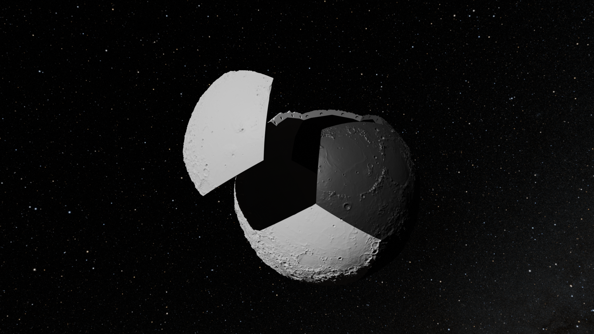
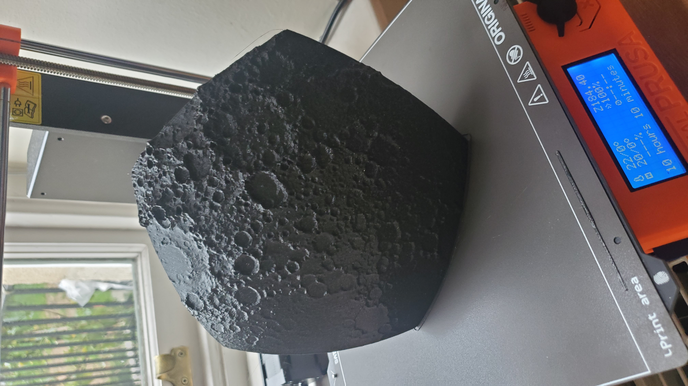

Blender Con 2024
I was fortunate enough to give my first presentation at Blender Con 2024 in Amsterdam. I did a live 50-minute walkthrough of some of the projects that appear on this page. I began with a walkthrough of the geometry nodes approach to modeling parametric surfaces, then demonstrated how to use modifiers and scripting to model the 3D dodecahedron moon.

The files referenced in the video can be found at blender con 24 files.
All 12 moon .stl files are available under a Creative Commons license at Printables.com.
Ideal Gas Simulation
My daughter was studying the states of matter in her science class and she had a fairly good grasp of the molecular (non-quantum) mental model of matter and how it translates to the physical properties of the material in different states. She, however had a bit of trouble with visualizing why an ideal gas will take the shape of its container. After much explaining, pretending we were molecules and dancing around, and throwing fruit off the walls and ceiling of the kitchen, we decided to have chatgpt help us visualize this in a web simulation. The simulation was written in threejs and can be found at Ideal Gas Simulation
Dodecahedron Moon
This is a 3D printed design of the moon (real topography from NASA Moon Kit) broken into the curved hexagonal faces of a dodecahedron. The whole design is held together by force-fit magnets. The full 12 STL files will be posted soon at Printables.
Frequency Difference
An exploration of the intersection of quadrics. Frequency difference (doppler difference) from a location to two different moving sensors can be modeled as two intersecting cones with related cone angles. Set to the music of Hans Zimmer, it can be quite mesmerizing.
CGI Sandbox
An exploration of CGI with drone footage. So far done only with Blender motion tracking. Hopefully evolving over the coming months. Drone footage courtesy of my buddy Greg.
Intersecting Hyperboloids
A visualization of two intersecting hyperboloids with one of their foci shared. It is interesting to note that the intersection pencil will always intersect the plane formed by the three foci at a right angle.
Time Difference Visualization
A visualization of a time difference surface made in Blender.
Alexa-Enabled Maze Solving Robot
Alexa Enabled Maze Solving Robot - An entry into a contest to link Amazon Alexa Gadgets to Lego Mindstorms. I made a robot that you gave instructions to via Alexa to help it solve a Lego maze.